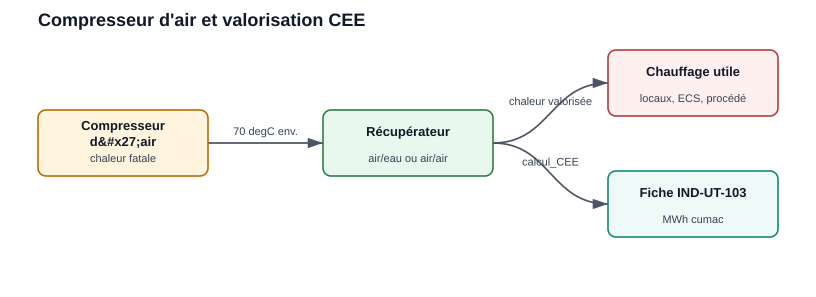
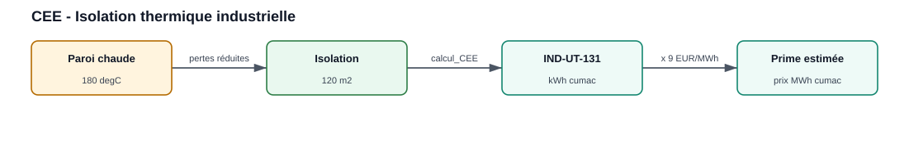
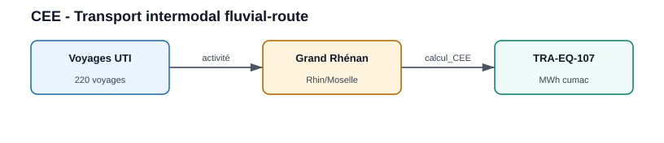
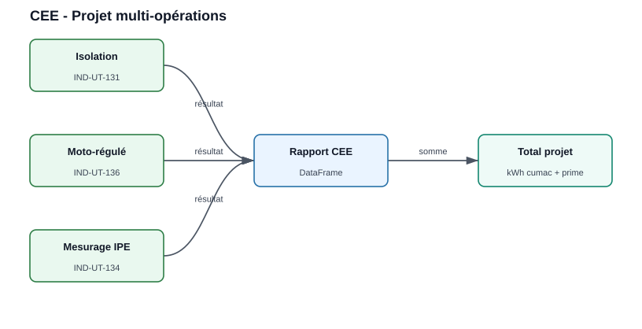

Certificats d’Économies d’Energy
Cette page présente un example by fiche d’opération standardisée réellement
supportée by le module CEE, rangé by secteur. Seules les fiches en
vigueur au catalogue officiel sont documentées (voir la note on les fiches
obsolètes en fin de page).
Lister les fiches disponibles
from CEE.CEE import list_fiches
print(list_fiches())
Result réel :
['IND-UT-103', 'IND-UT-130', 'IND-UT-131', 'IND-UT-134',
'IND-UT-135', 'TRA-EQ-101', 'TRA-EQ-107']
Le prix interne du MWh cumac (euro_MWhcumac, 5 €/MWh cumac by défaut) est
utilisé for la valorisation ; il est modifiable (CEE.euro_MWhcumac = 9).
calcul_CEE(..., return_details=True) renvoie un dictionnaire
(kWh_cumac, MWh_cumac, euro, titre).
Secteur Industrie
IND-UT-103 — Récupération de chaleur on un compresseur d’air

La chaleur du compresseur est récupérée for un usage (chauffage, ECS ou procédé) et valorisée en CEE.
from CEE.CEE import calcul_CEE
d = calcul_CEE(
fiche="IND-UT-103",
return_details=True,
fonctionnement="2*8h",
Department=69, # zone climatique H1
Heat_Use="procédé industriel", # ou "chauffage de locaux" / "ECS"
puissance_nominale=90, # kW
)
print(f"{d['MWh_cumac']:.0f} MWh cumac — {d['euro']:.0f} EUR")
Result réel : 2 304 MWh cumac — 11 520 EUR (à 5 €/MWh cumac).
IND-UT-130 — Condenseur on les effluents gazeux d’une chaudière vapeur
from CEE.CEE import calcul_CEE
d = calcul_CEE(
fiche="IND-UT-130",
return_details=True,
fonctionnement="3*8h_sansArrWE",
puissance_nominale=1500, # kW (<= 20 000)
)
print(f"{d['MWh_cumac']:.0f} MWh cumac — {d['euro']:.0f} EUR")
Result réel : 2 100 MWh cumac — 10 500 EUR.
IND-UT-131 — Isolation thermique de parois industrielles

La fiche s’applique à une paroi plane (surface S) ou cylindrique
(diamètre D, longueur L) according to sa temperature de service.
from CEE.CEE import calcul_CEE
d = calcul_CEE(
fiche="IND-UT-131",
return_details=True,
fonctionnement="3*8h_sansArrWE",
Temperature=180, # °C
Geometry="plan", # "plan" (S) ou "cylindre" (D, L)
S=120, # m²
)
print(f"{d['MWh_cumac']:.2f} MWh cumac — {d['euro']:.2f} EUR")
Result réel : 246,96 MWh cumac — 1 234,80 EUR.
IND-UT-134 — Système de mesurage d’indicateurs de performance energy
from CEE.CEE import calcul_CEE
d = calcul_CEE(
fiche="IND-UT-134",
return_details=True,
fonctionnement="2*8h",
duree_contrat=3.0, # années
puissance_nominale=800, # kW
)
print(f"{d['MWh_cumac']:.2f} MWh cumac — {d['euro']:.2f} EUR")
Result réel : 149,54 MWh cumac — 747,70 EUR.
IND-UT-135 — Freecooling by eau de refroidissement (substitution groupe froid)
from CEE.CEE import calcul_CEE
d = calcul_CEE(
fiche="IND-UT-135",
return_details=True,
fonctionnement="2*8h",
Department=69, # zone climatique H1
Supply_Temperature=16, # °C (12 <= T <= 21)
puissance_nominale=200, # kW
)
print(f"{d['MWh_cumac']:.0f} MWh cumac — {d['euro']:.0f} EUR")
Result réel : 4 356 MWh cumac — 21 780 EUR.
Secteur Transport
TRA-EQ-101 — Unité de transport intermodal rail-route

Le volume CEE dépend du nombre d’unités de transport et de voyages annuels.
from CEE.CEE import calcul_CEE
d = calcul_CEE(
fiche="TRA-EQ-101",
return_details=True,
longueur_uti="UTIsup9", # "UTIinf9" ou "UTIsup9"
nb_voyage_an=200,
nb_uti=10,
)
print(f"{d['MWh_cumac']:.0f} MWh cumac — {d['euro']:.0f} EUR")
Result réel : 37 000 MWh cumac — 185 000 EUR.
TRA-EQ-107 — Unité de transport intermodal fluvial-route
from CEE.CEE import calcul_CEE
d = calcul_CEE(
fiche="TRA-EQ-107",
return_details=True,
type_bateau="Bateau Grand Rhénan (2 500 t)",
bassin_navigation="Rhin/Moselle",
nb_voyage_uti=220,
)
print(f"{d['MWh_cumac']:.0f} MWh cumac — {d['euro']:.0f} EUR")
Result réel : 902 MWh cumac — 4 510 EUR.
Projet multi-opérations

Chaque opération produit une ligne de result ; le rapport agrège ensuite les volumes et les primes.
from CEE.CEE import calcul_CEE
import pandas as pd
operations = [
{"fiche": "IND-UT-131", "fonctionnement": "3*8h_sansArrWE",
"Temperature": 180, "Geometry": "plan", "S": 120},
{"fiche": "IND-UT-134", "fonctionnement": "2*8h",
"duree_contrat": 3.0, "puissance_nominale": 800},
{"fiche": "IND-UT-130", "fonctionnement": "3*8h_sansArrWE",
"puissance_nominale": 1500},
]
prix_mwh = 9.0 # hypothèse de prix externe
lignes, total_kwh = [], 0
for op in operations:
kwh = calcul_CEE(**op) # sans return_details -> kWh cumac
total_kwh += kwh
lignes.append({"Fiche": op["fiche"], "kWh_cumac": kwh,
"Prime_EUR": kwh * prix_mwh / 1000})
df = pd.DataFrame(lignes)
print(df)
print(f"Total : {total_kwh:.0f} kWh cumac — {total_kwh * prix_mwh / 1000:.0f} EUR")
Result réel (prime à 9 €/MWh cumac) :
Fiche |
kWh cumac |
Prime à 9 €/MWh |
|---|---|---|
IND-UT-131 |
246 960 |
2 222,64 EUR |
IND-UT-134 |
149 540 |
1 345,86 EUR |
IND-UT-130 |
2 100 000 |
18 900,00 EUR |
Total |
2 496 500 |
22 468,50 EUR |
Fiches obsolètes (non éligibles)
Certaines fiches restent in le registre du code for l’historique mais sont
exclues de list_fiches() et refusées by calcul_CEE (ValueError) :
IND-UT-136 — Systèmes moto-régulés : abrogée by arrêté du 18/08/2025.
TRA-EQ-108 — Wagon d’autoroute ferroviaire : opération close au 31/03/2020.
from CEE.CEE import list_fiches
print(list_fiches(include_deprecated=True))
# {'available': [... 7 fiches ...],
# 'deprecated': ['IND-UT-136', 'TRA-EQ-108']}
Conseils d’usage
Utiliser les noms exacts des paramètres attendus by chaque fiche.
Lancer
calcul_CEE(..., return_details=True)for un dictionnaire exploitable in un rapport (kWh_cumac,MWh_cumac,euro,titre).Ajuster
CEE.euro_MWhcumac(défaut 5) ou appliquer un prix externe.Vérifier l’éligibilité réglementaire on les fiches officielles before toute décision d’investissement (catalogue ADEME/ATEE).